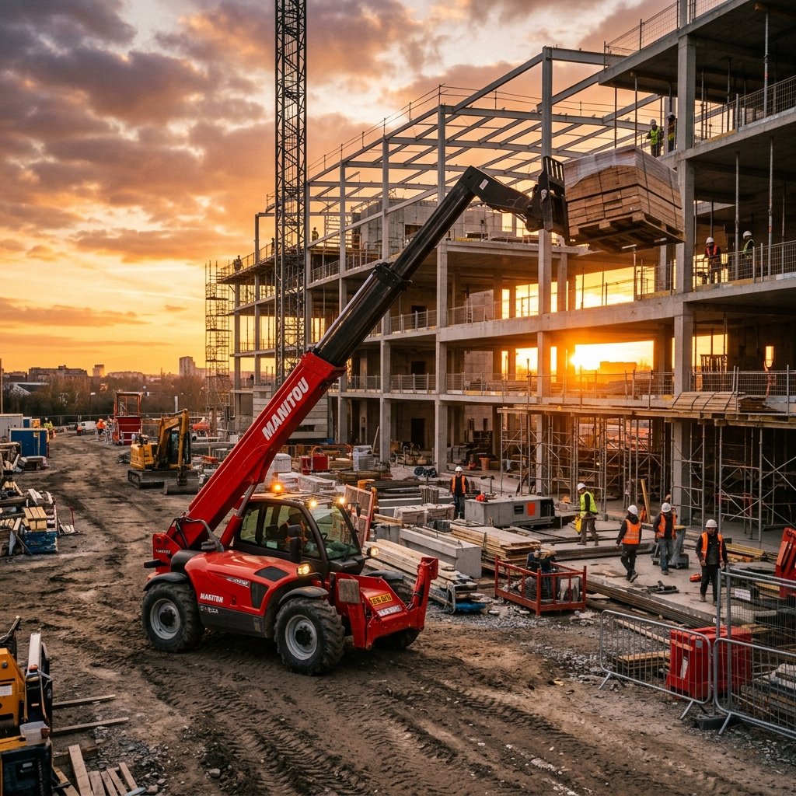
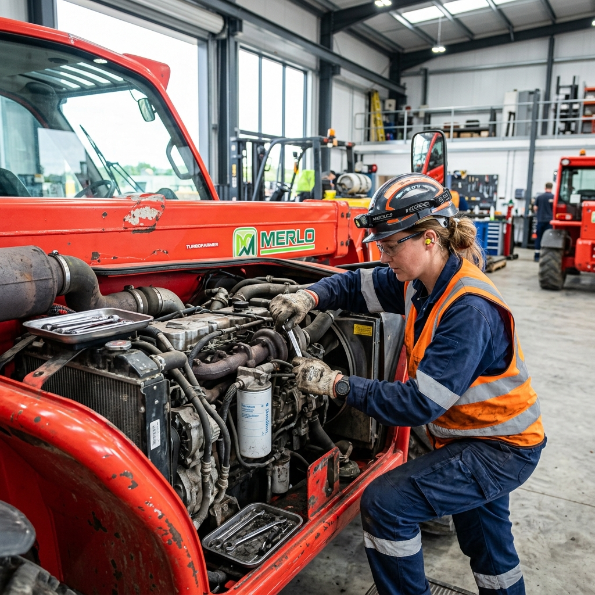
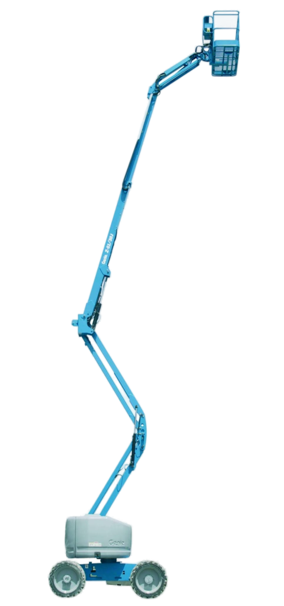
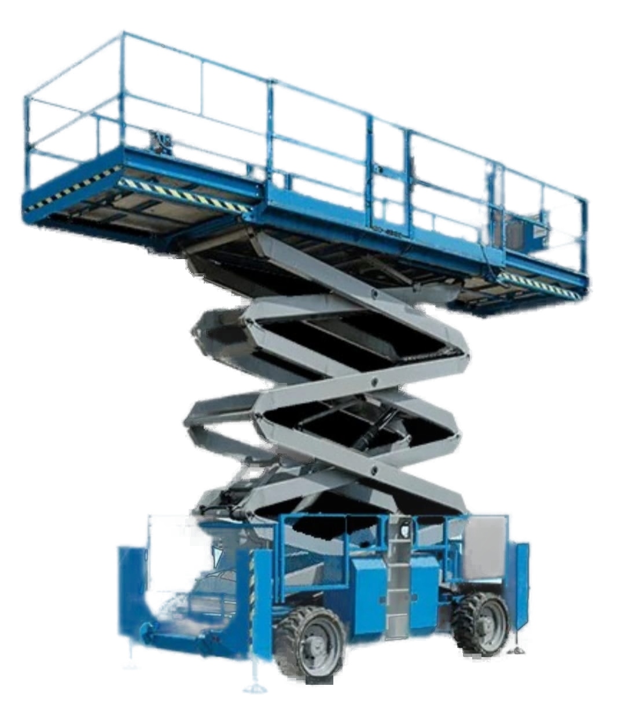
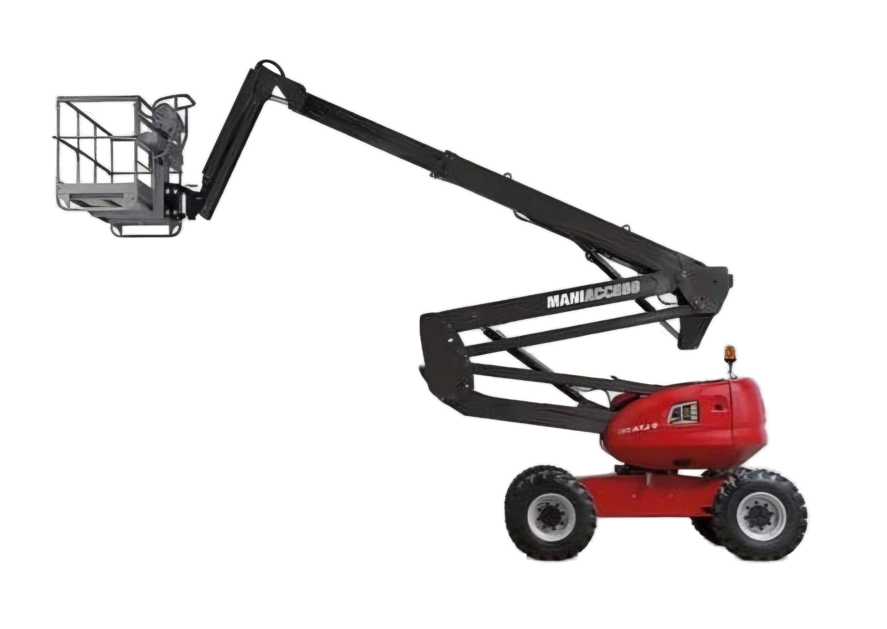
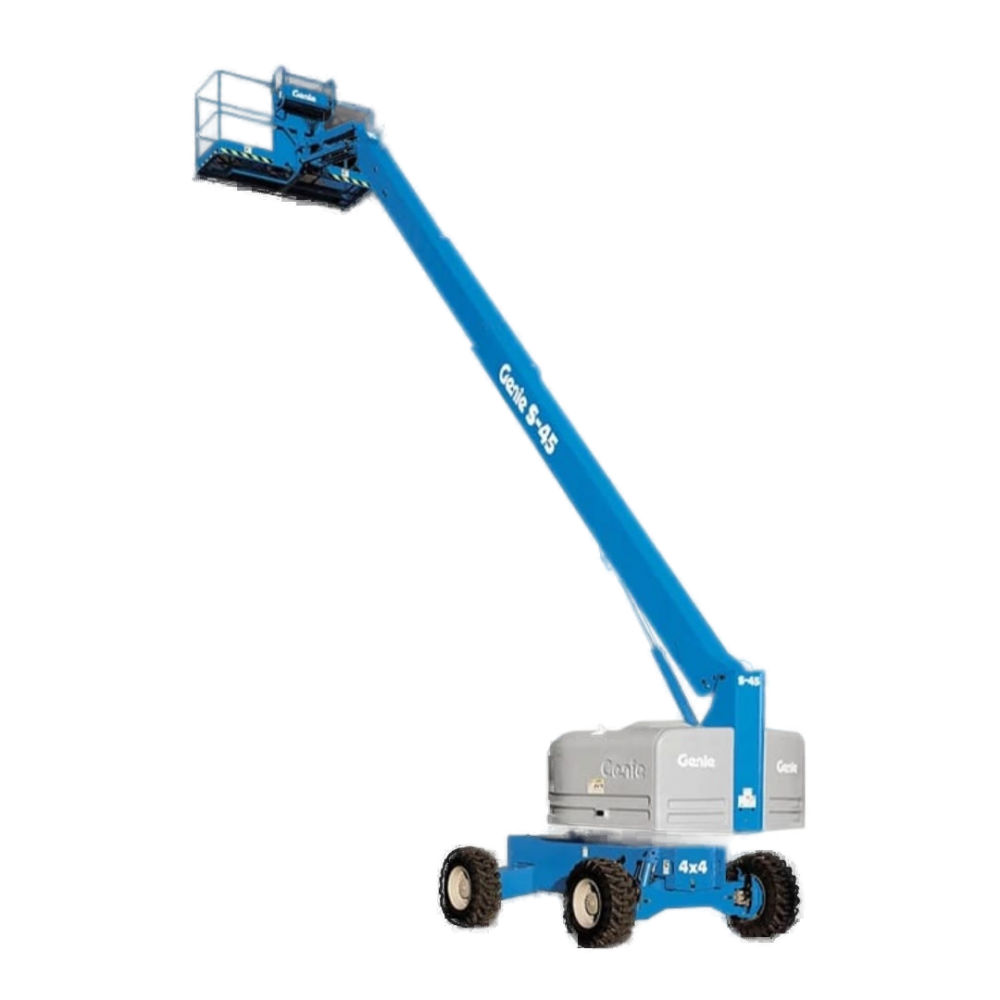
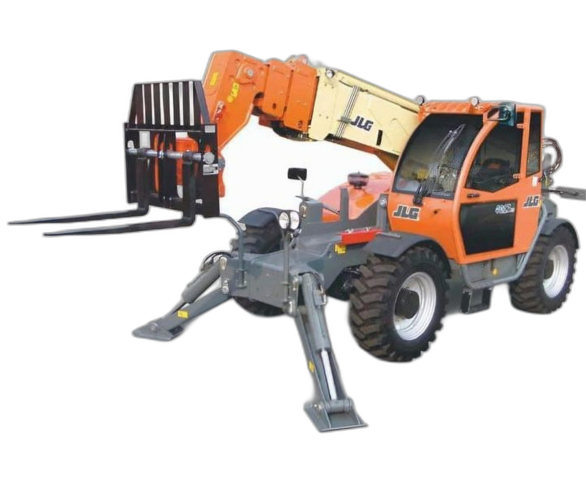
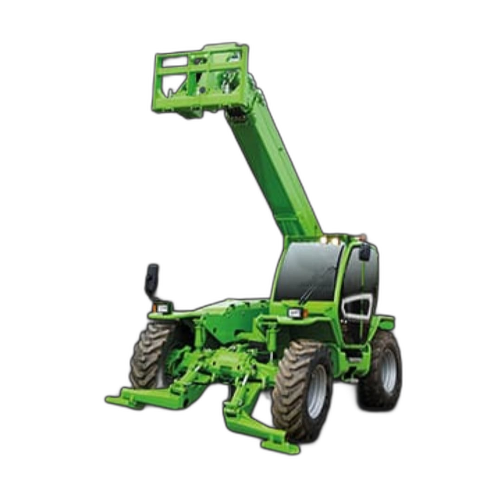

Szukasz sprawdzonej wypożyczalni maszyn? Specjalizujemy się w profesjonalnym wynajmie ładowarek teleskopowych, zwyżek i sprzętu budowlanego. Zaufaj ekspertom i pracuj na sprawnych maszynach wiodących producentów.


Firma CS Technika działa w branży maszyn budowlanych od 2015r. Zajmujemy się wynajmem maszyn budowlanych oraz ich serwisem. W naszej ofercie posiadamy ładowarki teleskopowe, podnośniki nożycowe, podnośniki teleskopowe i teleskopowo-przegubowe.
Oferujemy transport maszyn w dowolne miejsce. Zarówno tych wynajętych od nas jak również Twoich - jeżeli potrzebujesz je gdzieś przetransportować. Posiadamy nowoczesne maszyny najlepszych producentów: Merlo, JLG, Manitou, Genie.
Nasze ceny są bardzo konkurencyjne. Współpracujemy z najlepszymi firmami budowlanymi w Polsce! Zadzwoń, a ustalimy szczegóły. Zapraszamy do współpracy.
Oferujemy pełen zakres usług sprzętowych, od wynajmu po profesjonalny transport na plac budowy.
Zapewniamy dostęp do nowoczesnych ładowarek i zwyżek gotowych do pracy od zaraz w każdych warunkach terenowych.
Posiadamy wykwalifikowany zespół mechaników i nowoczesne narzędzia diagnostyczne. Naprawiamy usterki na miejscu.
Oferujemy transport maszyn w dowolne miejsce. Dostarczamy sprzęt wynajęty od nas, a także transportujemy Twoje własne maszyny pod wskazany adres.
Wybierz sprzęt dostosowany do Twoich potrzeb. Gwarantujemy pełną sprawność techniczną.

Podnośnik przegubowy spalinowy, napęd 4x4, idealny do pracy w trudnym terenie i omijania przeszkód na wysokości.

Terenowy podnośnik nożycowy z dużym pomostem roboczym. Zapewnia doskonałą stabilność i wysoki udźwig.

Wytrzymały podnośnik przegubowy charakteryzujący się znakomitą precyzją sterowania na placach budowy.

Teleskopowy podnośnik spalinowy, zapewniający duży zasięg w pionie oraz poziomie z doskonałą mobilnością w terenie.

Wszechstronna i potężna maszyna do transportu materiałów o dużej masie na znaczne wysokości.

Niezawodna ładowarka teleskopowa zapewniająca wyjątkową widoczność i manewrowość, idealna na każdy plac budowy.
Rozwiewamy wątpliwości dotyczące wynajmu zwyżek i ładowarek teleskopowych w naszej firmie.
Tak! Oferujemy transport maszyn w dowolne miejsce. Co ważne, dostarczamy nie tylko sprzęt wynajęty u nas, ale również pomagamy w relokacji i transporcie Twoich własnych maszyn pod wskazany adres.
Nie, prowadzimy wyłącznie wypożyczalnię maszyn budowlanych (wynajem tzw. "suchego sprzętu"). Nasza oferta kierowana jest do firm i profesjonalistów posiadających własne uprawnienia do obsługi zwyżek i ładowarek. W razie awarii oczywiście zapewniamy pełne wsparcie naszego mobilnego serwisu.
W naszej ofercie posiadamy ładowarki teleskopowe, podnośniki nożycowe, podnośniki teleskopowe i teleskopowo-przegubowe. Współpracujemy wyłącznie z najlepszymi producentami sprzętu: Merlo, JLG, Manitou oraz Genie.
Siedziba CS Technika znajduje się w okolicach Tarnowa (Ładna), jednak obsługujemy teren całej Polski. Nasze własne lawety dowożą sprzęt budowlany zarówno lokalnie (m.in. Dębica, Brzesko, Bochnia, Dąbrowa Tarnowska), jak i w dowolne, wybrane przez Ciebie miejsce w kraju.
Rozpocznijmy współpracę. Zadzwoń lub odwiedź naszą bazę techniczną.
502 237 816
biuro@cstechnika.com